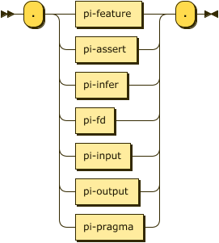
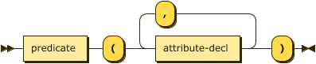
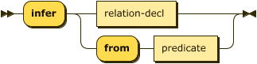
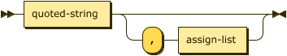
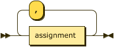
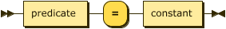
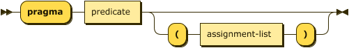

Processing Instructions
Processing Instructions are declarative statements meant for the parser and runtime tooling, they do not affect the meaning of the program itself.

processing-instruction
::= "."
( pi-feature
| pi-assert | pi-infer
| pi-fd
| pi-input | pi-output
| pi-pragma )
"." ;
Processing Instruction feature
The feature processing instruction determines which Datalog language is in use. Use of syntax not supported by the
selected language feature will result in errors.

pi-feature ::= "feature" "(" feature-id ( "," feature-id )* ")" ;

feature-id
::= "comparisons"
| "constraints"
| "disjunction"
| "negation"
| "functional_dependencies"
Example
.feature(negation).
.feature(comparisons, disjunction).
Processing Instruction assert
The assert processing instruction describes a new relation in the extensional database. The parser can determine
the schema for facts from their types in the database. The use of this processing instruction is therefore optional,
but recommended.
pi-assert
::= "assert" relation-decl ;

relation-decl
::= predicate "(" attribute-decl ( "," attribute-decl )* ")" ;

attribute-decl
::= ( predicate ":" )?
( "boolean" | "float" | "decimal" | "integer" | "string" ) ;
Example
.assert human(name: string).
Processing Instruction infer
The infer processing instruction describes a new relation in the intensional database. Typically the parser
can determine the schema for relational literals from their context, The use of this processing instruction
is therefore optional, but recommended. The alternate form is more explicit in that it defines
an intensional relation in terms of a previously defined extensional relation.

pi-infer
::= "infer" ( relation-decl | "from" predicate ) ;
Example
.infer mortal(name: string).
Alternatively the short-cut form is often more convenient.
.assert human(name: string).
.infer mortal from human.
Processing Instruction fd
The fd processing instruction, short for functional dependency, introduces a relationship between one or more attributes on the
left-hand (determinant) side and one or more attributes on the right-hand (dependent) side. This relationship denotes
that for a relationship $\small R$ with attributes $\small a_1, \cdots, a_n$, every valid combination of determinant
values uniquely determines the value of the dependent values.
Note that this processing instruction is only valid if the corresponding language feature is enabled.

pi-fd ::= ( "fd" | "functional_dependency" )
predicate ":"
attribute-index-list ( "-->" | "⟶" ) attribute-index-list

attribute-index-list
::= attribute-index ( "," attribute-index )*
An attribute index is either an attribute label, if one has been declared for the relation, or an integer $\small i \in [1,|schema(R)|]$.

attribute-index
::= integer | predicate
Constraints – given the notational form $\small R: \alpha \rightarrow \Beta$;
- the initial predicate must be the label of an extensional relation: $$\small R \in D_I \land label(R)$$
- the set of attribute identifiers comprising the set $\small \alpha$ must be in $\small R$: $$\small \forall a \in \alpha (a \in schema(R))$$
- the set of attribute identifiers comprising the set $\small \Beta$ must be in $\small R$: $$\small \forall a \in \Beta (a \in schema(R))$$
- the same attribute identifier must not appear in both determinant and dependent: $$\small \alpha \cap \Beta = \emptyset$$
Example
Given the extensional relation employee the two functional dependencies in the following are equivalent. Note that the implementation will ignore such duplicate declarations.
.feature(functional_dependencies).
.assert employee(id:integer, name:string).
.fd employee: id --> name.
.fd employee: 1 ⟶ 2.
Processing Instruction input
The input processing instruction instructs the parser to load facts for the named extensional relation from an
external file. This processing instruction requires that the relation be previously defined via the assert
processing instruction.

pi-input ::= "input" io-details "."

io-details
::= "(" predicate "," quoted-string
( "," format-spec )?
")" ;

format-spec
::= quoted-string ( "," assign-list )? ;

assign-list
::= assignment ( "," assignment )* ;

assignment
::= predicate "=" constant ;
the first quoted string is the type and
For a detailed discussion of media type handling, see Dataset Processing.
Example
.assert human(name: string).
.input(human, "data/humans.csv", "csv").
Processing Instruction output
The output processing instruction instructs the parser to write facts from the named intensional relation to an
external file. This processing instruction requires that the relation be previously defined via the infer
processing instruction.
pi-output ::= "output" io-details "." ;
Example
.infer mortal(name: string).
.output(mortal, "data/mortals.txt").
.infer mortal(name: string).
.output(mortal, "data/mortals.txt", "csv", separator=";", header=present).
Processing Instruction pragma

pi-pragma
::= "pragma" predicate ( "(" assignment-list ")" )? ;
Defined Pragmas and Keys
| Pragma | Key | Value Type | Description |
|---|---|---|---|
| base | iri | string | Interpreted as an absolute IRI, all other references are relative to this value. |
Notes
- If the
basepragma is not specified then any references in the subject resource are relative to the resource location if known by the parser, or relative to the process performing the parsing.
Example
In the following case the base IRI is implicit and is determined by the parser to dereference the relative value “data/humans.csv”.
.assert human(string).
.input(human, "data/humans.csv", "csv").
In the following case the base IRI is explicitly declared and so the input for human is clearly “https://example.com/datalog/data/humans.csv”.
.pragma base(iri="https://example.com/datalog/").
.assert human(string).
.input(human, "data/humans.csv", "csv").